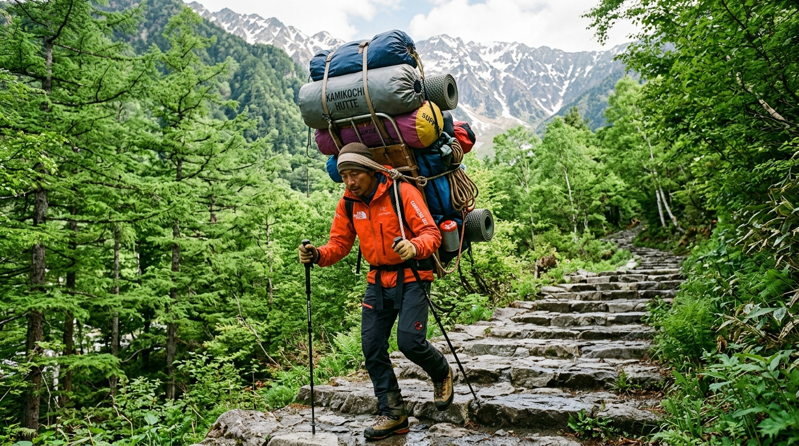

Guides & High-Altitude Porter Logistics
How our combination of JMGA-certified mountain route leaders and traditional alpine porters protects your safety on Japan's steepest rock faces.
Why High-Altitude Porters Matter on Japanese Ridges
In the Western Alps or Rocky Mountains, multi-day trails often feature gentle switchbacks. In Japan's Northern Alps, trails were forged by historic mountain ascetics (shugenja) directly up knife-edge ridges, requiring iron chain scrambles and chimney climbs.
Carrying a typical 18kg self-supported pack severely compromises your center of gravity. On the Daikiretto or Hotaka ladders, a heavy pack pulls your shoulders backward, increasing fall risks and fatiguing quads before summit pushes.
Our dedicated porter corps (bokka) carry up to 12kg of your bulk sleeping gear, spare thermal layers, and camera kit ahead of the group. Your gear is waiting inside your private hut room when you arrive.

Interactive Weight & Fall-Risk Comparison
Click between the two modes to examine how pack weight impacts your safety on Class 3 and 4 iron chains.
Agile 20L Technical Daypack
Client carries only 2L water bladder, Gore-Tex shell jacket, energy nutrition, and certified climbing helmet. 12kg carried by our porter.
Alpine Safety Advantages:
- ✓ Natural Equilibrium: Uncompromised posture on chimney cracks and knife-edge cols.
- ✓ 100% Free Hands: Instant reactive grip on chains and anchor slings.
- ✓ Energy Preservation: Arrive at summit ridges alert and ready for technical pitches.
A Day in the Life on a Guided Traverse
How our guides and porters coordinate seamlessly to deliver security, hot meals, and peak summit conditions.
Meteorological Appraisal & Route Briefing
Lead guide evaluates Japan Meteorological Agency high-resolution radar models, ridge wind speeds, and cloud inversion forecasts. Today’s pace and chain protocols are briefed over breakfast.
Porter Advance Departure
The porter corps secures your heavy 12kg duffel onto wooden expedition frames (nekko) and sets off ahead at an accelerated alpine pace, establishing water points and checking trail conditions.
Technical Chain & Ladder Section Management
Guide tethers guests through vertical ladder pitches using alpine slings and carabiners. Client-to-guide ratio is maintained strictly at 1:4 (or 1:2 on Daikiretto and Gendarme).
Yamagoya Arrival & Room Check-in
Arrive safely at the mountain hut well before late-afternoon fog sets in. Your porter has already delivered your duffel to your private futon area. Warm Japanese dinner and hot tea await.